Antes de profundizar en los componentes de Jetpack Compose, es importante mantener
organizado el código
de la aplicación. Por ello, ten en cuenta lo siguiente:
Puedes crear tantos archivos como necesites.
Si la aplicación tiene varias pantallas, cada una debe tener su código de interfaz en un archivo separado.
El archivo que contiene una clase que extiende Activity no debe incluir componentes de UI.
Debes crear un componente base para la aplicación que pueda usarse desde cualquier sitio.
Todos los archivos de UI deben colocarse dentro de la carpeta ui.
Si varios componentes pertenecen a la misma sección de pantalla, debes crear un componente que los agrupe.
Cuando un componente se repite con el mismo estilo, debes crear un componente personalizado que lo extienda.
Para ilustrar esto, modificaremos el proyecto Click Counter de la U6
siguiendo todos estos principios. Además, indicaremos dónde debe colocarse cada elemento estudiado.
El primer paso es crear un nuevo elemento Composable llamado
ClickCounterContent:
Clic derecho sobre la carpeta ui→ New → Kotlin Class/File.
Especifica el nombre: ClickCounterContent, selecciona File y pulsa Enter.
Dentro del archivo ClickCounterContent, incluye lo siguiente:
Los componentes de Jetpack Compose pueden clasificarse informalmente en dos tipos:
Layout
Permiten organizar los elementos de la interfaz gráfica
Box
Surface
Column
Row
Card
ConstraintLayout
Scaffod
TopAppBar
BottomBar
ModalDrawer
LazyColumn
LazyRow
LazyVerticalGrid
LazyHorizontalGrid
LazyVerticalStaggeredGrid
LazyHorizontalStaggeredGrid
...
Presentación de información
Permiten mostrar información al usuario.
El usuario puede interactuar con ellos.
Text
TextField
Button
Image
Spacer
Switch
Slider
CheckBox
RadioButton
ElevatedButton
Icon
IconButton
SnackBar
BadgedBox
Slider
FloatingActionButton
...
En la unidad anterior ya se utilizaron algunos componentes: Column, Row, Text, Button,
Spacer, Surface.
Toda la interfaz se construirá con:
Componentes ofrecidos por Jetpack Compose
Componentes personalizados que amplían o agrupan los componentes existentes.
Los componentes de Jetpack Compose son funciones etiquetadas con @Composable.
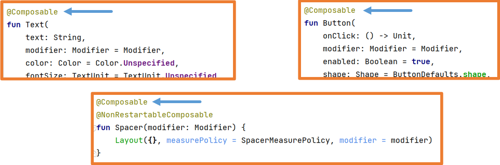
Para crear tu propio componente, debes crear una función etiquetada con @Composable.
Además, la documentación indica:
Si la función @Composable no devuelve nada, su nombre debe empezar por
mayúscula.
Si devuelve algo, debe empezar por minúscula.
Material 3
La última versión de Jetpack Compose utiliza Material Design 3. Material Design es un estilo de diseño de
interfaces creado por Google.
Todos los componentes de Jetpack Compose pueden consultarse en la documentación
oficial
con un ejemplo visual y un enlace a Material
Design 3:
para que puedas ver cómo usar cada componente y las guías de estilo:
La web de Material Design 3
ofrece
información muy importante
sobre cómo usar los componentes en la sección Guidelines (guías de estilo):
ExperimentalMaterial3Api
A veces, algunos componentes de Jetpack Compose están en fase experimental, pero pueden utilizarse sin
problema.
En estos casos, Android Studio solicitará añadir esta anotación.
En la ayuda contextual de Android Studio podrás especificarla de la siguiente manera:
Al principio del componente que contiene el elemento experimental.
En todo el archivo actual.
O bien puedes propagarla para que el componente padre también deba especificarla.
Componentes Text y BasicText
Los componentes Text y BasicText permiten mostrar una
cadena de texto en la interfaz.
La diferencia es que Text utiliza principios de Material mientras que BasicText
no.
Su uso básico ya se ha estudiado en clase y es el siguiente:
Es importante saber cómo funcionan los componentes de Jetpack Compose. Pulsa CTRL y mantenlo pulsado mientras haces clic izquierdo sobre el nombre de la clase.
También funciona situando el cursor encima y pulsando CTRL+B.
Esto abrirá el código del componente en Android Studio. Puedes hacerlo con cualquier clase, función u objeto…
Pulsar ctrl+B sobre el componente para ver su definición.
Todas las funciones cuentan con documentación KotlinDoc, donde se explican sus
parámetros.
Cuando llamas a la función Text usando nombres de parámetros como recomienda Jetpack Compose, puedes alterar su
orden.
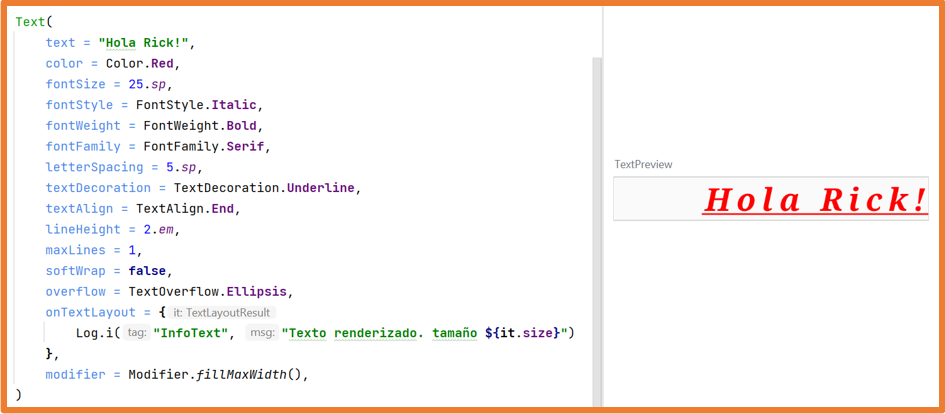
Cuando utilices componentes de Jetpack Compose, igual que con cualquier clase que no es tuya, es importante
revisar los parámetros que tienen y cómo funcionan.
Con el cursor sobre una clase/función/parámetro/variable, pulsa CTRL+B y Android Studio abrirá el archivo donde
está definido para que puedas revisarlo.
Por ejemplo:
text requiere un String
modifier requiere un Modifier
fontWeight requiere un FontWeight
Navegando entre los parámetros con CTRL+B puedes ver qué tipo de dato acepta cada uno. También puede
consultarse online en la documentación oficial.
El único parámetro obligatorio es text, la cadena que
se debe mostrar.
Todos los demás parámetros son opcionales (ya tienen valor). Si los omites, Kotlin usará sus valores por
defecto.
Algunos ejemplos de Text con parámetros:
Con el parámetro style puedes configurar varias propiedades de estilo a la vez.
Aunque también puedes usar parámetros específicos como color, fontSize…
Modifier
Todo componente tiene un parámetro modifier.
Por defecto, el parámetro modifier contiene un objeto Modifier con una
configuración básica.
El objeto Modifier es un Companion Object con
numerosas funciones de extensión para modificar componentes.
Además, es del tipo builder, así que puedes encadenar llamadas a estas funciones
usando puntos.
El orden en el que llames a estas funciones es importante y genera efectos distintos.
Podemos clasificar las funciones de extensión de Modifier de forma no oficial así:
El orden de llamada de las funciones del Modifier cambia el comportamiento:
Gracias a Modifier, todos los componentes pueden ser clicables:
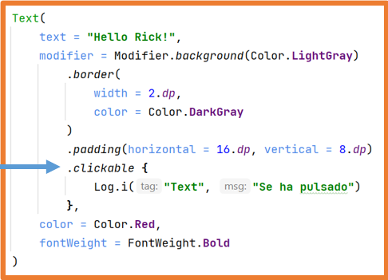
El orden en que coloques clickable también cambia el comportamiento.
Hay más manejadores de eventos: onFocusChanged, onKeyEvent…
Si el contenido de un componente no cabe en la pantalla por cualquier motivo,
gracias a Modifier puedes especificar verticalScroll o horizontalScroll
para poder desplazarlo y verlo completo.
Si aplicas verticalScroll o horizontalScroll
en un componente que ocupa toda la pantalla, el resto de elementos no se verá salvo que indiques un tamaño al
componente desplazable.
Si un elemento puede desplazarse verticalmente, no debería haber otro desplazable vertical dentro.
Si uno puede desplazarse horizontalmente, no deberías tener otro desplazable horizontal dentro.
La mayoría de funciones de Modifier pueden usarse en cualquier ámbito, pero
algunas solo pueden usarse en ámbitos específicos.
Componente Button
Un Button permite realizar una acción cuando el usuario interactúa.
Tiene dos parámetros obligatorios: onClick y content,
ambos funciones lambda, y el segundo es el último parámetro para que pueda extraerse fuera de los paréntesis.
El parámetro content es una función lambda que recibe @Composable, lo que significa que puedes poner componentes de Jetpack Compose en su
interior.
Además, implementa RowScope (ámbito de fila) por lo que se comporta como un Row, y cualquier componente incluido se colocará en fila.
Button define algunos valores por defecto en la clase ButtonDefaults, y para ciertas personalizaciones debes usar dicha clase:
El componente Button tiene distintas variaciones con
estilos predefinidos:
Internamente, todos estos componentes son de tipo Button.
Componentes propios
Para mantener el código organizado, es habitual crear tus propios componentes que amplíen o agrupen los
componentes existentes de Jetpack Compose.
Para crear tu propio componente, debes crear una función etiquetada con
@Composable.
Además, la documentación indica que:
Si la función @Composableno devuelve nada (lo más habitual),
su nombre debe empezar con mayúscula.
Si la función @Composablesí devuelve algo, su nombre debe
empezar con minúscula.
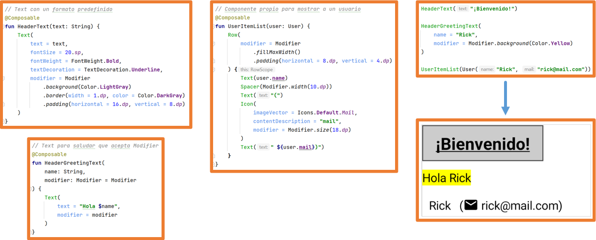
Puedes diseñar tu propio componente que combine un Modifier interno con el Modifier
recibido como parámetro.
Cuando creas un componente que amplía otro, puedes definirlo para que reciba un modifier como parámetro, que posteriormente se aplicará al componente extendido.
Además, puedes combinar el Modifier recibido como parámetro con el definido dentro
del componente usando el método then.
Ten en cuenta que la ubicación donde llames a then alterará su comportamiento.
Dónde llames a then cambia su comportamiento.
También puedes indicar que, si se recibe un Modifier, se use ese; en caso
contrario, cargar uno interno.
Tus propios componentes te permiten dividir el código para una mejor organización.
Es importante que tus componentes personalizados sean lo más pequeños posible y
tengan nombres semánticos, de modo que se expliquen por sí mismos.
Además, puedes crear componentes personalizados que agrupen otros para reutilizarlos todos a la vez y organizar
mejor el código.
Los ejemplos anteriores son ideales para comprender este concepto.
Componente Spacer
El componente Spacer te permite colocar espacio entre otros componentes y
solo acepta el parámetro modifier.
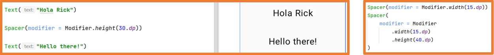
Es recomendable crear tu propio componente que extienda Spacer para simplificar su uso:
Imágenes
En una aplicación Android, las imágenes deben importarse al proyecto o descargarse desde internet.
Las imágenes importadas deben estar en alguno de estos formatos: vector, jpg, png o webp.
En cuanto a las imágenes rasterizadas (jpg, png y webp), es preferible usar el formato webp. Por ello, explicaremos cómo convertir imágenes importadas en formato jpg y png a
webp.
Para añadir imágenes al proyecto, abre el panel Resource Manager situado a la
izquierda y pulsa el botón +.
Para añadir imágenes rasterizadas (jpg, png y webp), selecciona Import Drawables.
Una vez eliges la imagen, aparece una ventana de importación:
Si quieres, puedes seleccionar un QUALIFIER, lo cual permitirá cargar imágenes de
distinto tamaño según las características del dispositivo.
Finalmente, pulsa Import y la imagen estará lista.
Para añadir imágenes vectoriales, normalmente iconos de Google, selecciona Vector
Asset.
Se abrirá una ventana donde podrás elegir el icono y especificar su nombre, tamaño, color y opacidad.
Puedes elegir entre Clip art (iconos por defecto de Google) o Local file si el recurso es externo.
Finalmente, haz clic en Finish y la imagen estará lista.
Todas las imágenes importadas, sin importar su tipo, se encuentran en la carpeta res.
Si has elegido QUALIFIERS, las imágenes aparecerán organizadas según dicho QUALIFIER.
Convertir imágenes rasterizadas a webp
Google recomienda el formato webp porque está más optimizado y ocupa menos espacio.
Usar webp puede reducir el tamaño de la aplicación hasta un 80%.
El formato webp es compatible desde API 14 con pérdida de calidad y desde API 18 sin pérdida.
Dado que en el curso trabajamos con API 24 o superior, no hay problemas de calidad.
Haz clic derecho sobre la imagen en el proyecto:
Elige las opciones necesarias: 100% o Lossless encoding → maximum quality.
Aparece una vista previa mostrando la calidad final, el tamaño final y las diferencias.
También puedes ajustar la calidad final si lo deseas.
En el ejemplo, una imagen al 30% de calidad apenas pierde nitidez y pasa de 421.3 KB a 14.5 KB (un 3.5% del
tamaño original).
Finalmente, pulsa Finish para convertir la imagen a formato webp.
Con imágenes más grandes, la optimización es aún más notable:
Imagen original: 7.9 MB
Imagen final: 400 KB
Reducción: 6.1%
Componente Image
El componente Image permite cargar imágenes importadas en el proyecto.
La función tiene dos parámetros obligatorios:
painter: indica qué recurso cargar.
contentDescription: descripción de la imagen.
Usando la función Modifier.clip(), puedes dar forma a cualquier componente.
Si aplicas un borde, debes usar la misma forma que en el clip.
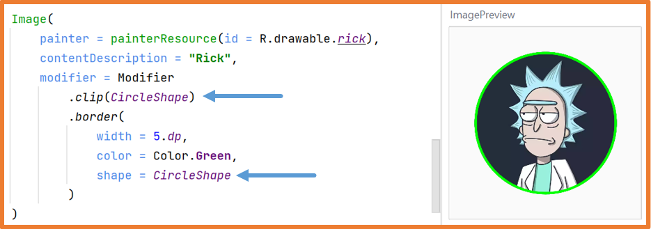
Si indicas a la imagen que ocupe el espacio disponible mediante el parámetro ContentScale,
puedes especificar cómo debe llenar ese espacio:
Con Crop: se ajusta a la dimensión más pequeña del contenedor.
Imágenes de Internet
Usando la librería Coil y el componente AsyncImage,
puedes cargar imágenes desde internet.
Necesitas permiso de acceso a la red. Para ello, en el archivo
AndroidManifest.xml,
en manifest → AndroidManifest.xml debes añadir:
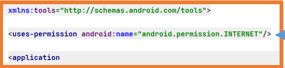
En el archivo libs.versions.toml:
En la sección [versions]:
coil="3.0.4"
En la sección [libraries]:
coil-compose = { group = "io.coil-kt.coil3", name = "coil-compose", version.ref = "coil" }
coil-network-okhttp = { group = "io.coil-kt.coil3", name = "coil-network-okhttp", version.ref = "coil" }
A continuación, añade la dependencia en el archivo
build.gradle.kts (Module: app)
y pulsa Sync Now en la esquina superior derecha.
Cuando finalice la sincronización, ya puedes usar el componente AsyncImage.
Dado que las @Previewno tienen acceso a internet,
debes ejecutar la aplicación para ver el resultado.
AsyncImage tiene dos parámetros obligatorios: model y contentDescription.
También dispone del parámetro contentScale para indicar cómo la imagen llena el
espacio disponible.
AsyncImage también cuenta con el parámetro contentScale
para especificar cómo debe llenar el espacio disponible.
Puedes dar forma a imágenes con AsyncImage y la función Modifier.clip().
Coil ofrece la función crossfade para mostrar la imagen gradualmente:
Componente Icon
El componente Icon muestra un icono en la aplicación, similar a Image, pero con soporte de Material Design.
Solo acepta imágenes vectoriales o raster (convertidas a webp).
Solo puede mostrar un color.
Por defecto, su tamaño es 24dp, pero admite los siguientes tamaños:
En el ejemplo, usar una imagen como Icon descarta sus colores.
Con la clase Icons, puedes usar iconos del sistema.
Lo habitual es usar iconos vectoriales de Material Design.
Android Studio solo incluye algunos iconos por defecto.
Si necesitas el conjunto completo, añade la siguiente dependencia en:
Archivo libs.versions.toml, en la sección [libraries]:
androidx-material-icons-extended = { group = "androidx.compose.material", name = "material-icons-extended" }
Archivo build.gradle.kts (Module: app) y sincroniza:
Puedes usar el parámetro tint para cambiar el color del icono.
Componente Badge
El componente Badge te permite mostrar información dinámica, como el número de
mensajes pendientes.
Un Badge solo debe mostrar un icono o un texto corto.
Componente BadgedBox
El componente BadgedBox muestra información dinámica, como el número de mensajes
pendientes, encima de otro elemento, como un icono.
Se usa habitualmente en barras de navegación.
Componentes Divider
Existen tres componentes Divider:
Divider: disponible hasta material3 v1.1.1, deprecado en material3 v1.2.0.
HorizontalDivider: disponible en material3 v1.2.0.
VerticalDivider: disponible en material3 v1.2.0.
Como la versión 1.2.0 está en Alpha, puedes seguir usando Divider.
Si quieres usar HorizontalDivider y VerticalDivider,
debes actualizar la dependencia en build.gradle.kts (Module) y sincronizar.
Divider (una línea horizontal), HorizontalDivider y
VerticalDivider dibujan líneas para separar elementos, normalmente en Rows o
Columns.
Los tres componentes comparten los mismos parámetros: modifier, thickness y color.
Crea un proyecto en Android Studio llamado ProfileYou.
Usando los componentes vistos hasta ahora en esta unidad, diseña una pantalla que haga de perfil de usuario en
una red social,
mostrando:
Tu nombre
Una foto tuya (tipo carné)
Una lista de hobbies o gustos, cada uno con un icono delante
Un botón para seguir o dejar de seguir
Dos imágenes pequeñas de lo que quieras
Un botón con icono para dar like o quitar like a cada una de esas imágenes
Una BadgedBox con un icono de sobre mostrando el número de mensajes sin leer
Un botón abajo con un + que incremente el contador de mensajes
La aplicación podría verse así:
Aquí tienes una posible solución; recuerda que solo es
una referencia, y deberías intentar hacerlo por tu cuenta.
Conceptos
Composición y Recomposición
Composición y recomposición son comportamientos
típicos en las interfaces de usuario declarativas.
Composición: la primera ejecución de una función de composición (@Composable)
-> renderizado de un componente en la interfaz.
Recomposición: la segunda o más ejecuciones de una función de composición
(@Composable) -> se vuelve a renderizar la interfaz solo en los componentes afectados.
Si, durante la ejecución, un componente cambia, ese componente se recompone.
Por ello, la interfaz de usuario siempre muestra la última versión del componente.
Estados
En Jetpack Compose, un estado es una variable ligada al estado de la aplicación.
Si, mientras se ejecuta la aplicación, un estado (una variable ligada al estado de
la aplicación)
cambia de valor, cualquier elemento de la interfaz que dependa de él se recompone (se vuelve a renderizar).
En el ejemplo de la UD6 "Clicks Counter", usamos un estado para volver a
renderizar la interfaz cuando se pulsa el botón.
mutableStateOf: indica que la variable es un estado
(una variable ligada al estado de la aplicación).
Si esta variable cambia, cualquier función @Composable que la utilice se recompone.
El problema es que, si la función @Composable se vuelve a ejecutar, el estado
vuelve a su valor inicial.
Podemos resolverlo con:
remember: indica a Android que una variable debe recordarse durante la recomposición.
rememberSaveable: lo anterior, pero además permanece
tras destruirse y recrearse la Activity.
Los estados pueden crearse con =, pero eso implica usar .value
para leer y modificar su valor.
Para simplificar el uso de estados, puedes usar el delegado by,
como en los ejemplos, permitiendo referirte al estado directamente con el nombre de la variable.
Cuando hablamos del parámetro modifier,
comentamos que si el contenido no cabe en la pantalla, puedes aplicar
verticalScroll o horizontalScroll para permitir el
desplazamiento.
Usamos rememberScrollState para ello.
Esta función establece un estado mediante rememberSaveable, por lo que
el desplazamiento se recuerda tras cambios de orientación/configuración:
Gracias a la recomposición, es sencillo cambiar la apariencia de la interfaz:
Otro ejemplo
Componentes para introducir información
A continuación veremos un conjunto de componentes de Jetpack Compose que permiten recoger
información del usuario.
Estos componentes suelen utilizarse en formularios o pantallas de ajustes.
Como estos componentes cambian al introducir o seleccionar datos, es necesario usar estados para gestionarlos
correctamente.
Componente TextField
Los componentes TextField permiten que el usuario introduzca datos desde el teclado
del dispositivo.
Hay tres tipos de TextField:
BasicTextField: un campo de texto básico.
TextField: usa los principios de Material.
OutlinedTextField: igual que TextField pero con un borde por defecto en el
parámetro shape.
Como vimos anteriormente, es importante conocer los parámetros que pueden tener los componentes.
Todos los parámetros que aceptan una función lambda permiten realizar acciones.
Si la lambda es además @Composable, puedes incluir más componentes de Jetpack
Compose dentro.
Ejemplo con dos campos, uno para email y otro para contraseña:
Ejemplo con dos campos, uno para el email y otro para la contraseña
Ejemplo de un campo de contraseña que permite mostrar el texto escrito:
Ejemplo de un campo de contraseña que permite ver el texto introducido
Ejemplo en el que el botón solo se activa si los campos tienen datos:
Gracias a los estados y la recomposición, no necesitas un if para habilitar el
botón:
El parámetro keyboardOptions permite controlar el tipo de teclado que se muestra.
El parámetro keyboardActions te permite especificar qué ocurre cuando el usuario pulsa el botón (imeAction).
State Hoisting
Como se mencionó antes, es muy habitual crear componentes personalizados que envuelvan uno o varios componentes
de Jetpack Compose.
En este punto, existen dos posibilidades:
Componente stateless: tu propio componente que no declara estado.
Componente stateful: tu propio componente que declara un estado.
Stateless Stateful
Desde fuera de un componente stateful, no puedes acceder a
su estado.
Imagina un formulario donde todos los componentes son personalizados y stateful.
¿Cómo accederías a los datos introducidos por el usuario?
En el ejemplo anterior, todos los componentes están codificados directamente, así que no hay problema, pero…
¿qué ocurriría si los hubieras extraído como componentes personalizados (como se recomienda para mantener el
código limpio)?
Extrayendo componentes como componentes propios
La solución es State Hoisting, que permite acceder al estado desde fuera.
Al usar State Hoisting, el estado deja de declararse dentro del componente
stateful,
convirtiéndolo en un componente stateless.
La práctica recomendada es mantener los componentes stateless siempre que sea
posible.
Si un componente tiene un estado que no necesitas desde fuera, puede permanecer stateful.
La técnica de State Hoisting consiste en eliminar el estado de un componente
stateful
(volviéndolo stateless) y sustituirlo por dos parámetros que deben proporcionarse al usarlo:
Uno para proporcionar el valor al componente
Otro, una lambda para modificar dicho valor
Esta técnica ya la usa, por ejemplo, el componente TextField.
Ejemplo previo aplicando State Hoisting:
Componentes stateless Cómo usar los componentes
Puedes hacerlo de una manera más limpia usando = en lugar de by.
Estado único Múltiples estados
Componente Switch
Los Switch son interruptores que permiten activar o
desactivar funcionalidades.
Son muy comunes en las secciones de preferencias.
El parámetro thumbContent permite añadir un icono al switch.
También puedes personalizar los colores:
Crea un nuevo proyecto en Android Studio llamado ConverterV2You
La aplicación debe contener:
Tu nombre
Una foto tuya (tipo carné)
Un campo de texto para que el usuario introduzca un número a convertir a binario o decimal.
Un switch (Switch) para decidir si convertir a decimal o binario.
Un botón para realizar la conversión.
Un texto mostrando el resultado. Será de un color si es binario y de otro si es decimal.
Un botón para limpiar tanto el campo de texto como el resultado.
Aquí tienes un ejemplo de cómo podría verse la aplicación:
En este enlace puedes encontrar una
solución en GitHub. Una vez más, es solo una referencia; se espera que lo intentes por tu cuenta.
Componente Checkbox
El componente Checkbox permite que los usuarios seleccionen una o varias opciones.
Puedes personalizar sus colores de manera similar a los Switch.
Dado que Checkbox suele ir acompañado de un texto,
puedes crear un componente personalizado que agrupe un Text,
un Spacer y un Checkbox dentro de un
Row para reutilizarlo en cualquier parte.
Aquí tienes un ejemplo de cómo definirlo:
//Data class for MyCheckbox objects
data class Check(
var title: String,
var selected: Boolean,
var onCheckedChange: (Boolean) -> Unit
)
//Function that receives a set of titles and converts them
//into a list of Check objects
@Composable
fun getChecks(vararg titles: String): List {
return titles.map {
var state by rememberSaveable {
mutableStateOf(false)
}
Check(
title = it,
selected = state,
onCheckedChange = { selected -> state = selected }
)
}
}
//Custom stateless Checkbox component
@Composable
fun MyCheckBox(check: Check) {
Row(
verticalAlignment = Alignment.CenterVertically,
) {
Checkbox(
checked = check.selected,
onCheckedChange = { check.onCheckedChange(it) }
)
Text(text = check.title)
}
}
Los Slider son barras con un indicador arrastrable para elegir un valor.
Por defecto, puedes seleccionar valores entre 0.0 y 1.0, pero esto se puede modificar.
También puedes personalizar el indicador arrastrable.
Slider personalizando el indicador
Componente RangeSlider
El componente RangeSlider funciona de manera similar al Slider,
pero permite seleccionar un rango de valores.
RangeSlider
Puedes modificar los indicadores inicial (starThumb) y final (endThumb).
En el ejemplo, dos estados almacenan los valores mínimo y máximo; podrías crear un estado personalizado con un
rango (actualmente experimental).
Componente ExposedDropdownMenu
El componente ExposedDropdownMenu muestra un TextField
con un menú desplegable.
Dependiendo de cómo esté codificado su contenido, un ExposedDropdownMenu puede
utilizarse de diferentes formas:
No editable: solo permite seleccionar una opción.
Editable: puedes seleccionar una opción o escribir en el campo.
Editable con autocompletado: editable con filtrado de resultados.
Un ExposedDropdownMenu está formado por un TextField con el modificador menuAnchor()
y varios componentes DropdownMenuItem para las opciones disponibles.
Los componentes TimePicker (con dial) y TimeInput
(con teclado) permiten seleccionar una hora.
TimePicker TimeInput
Componentes Chip
Los Chips son pequeños componentes con texto que sirven para iniciar entrada de
información,
lanzar acciones, filtrar contenido o realizar selecciones.
Hay cuatro tipos:
Assist: representan acciones predefinidas en la app, como añadir al calendario
o cómo llegar.
Filter: representan filtros aplicables a elementos de una colección.
Input: representan pequeñas entradas de usuario, como direcciones de email
añadidas.
También existen variantes ElevatedAssistChip,
ElevatedFilterChip y ElevatedSuggestionChip.
Los Chips:
No son botones.
No deben usarse para acciones finales; para eso están los botones.
Reaccionan a acciones del usuario.
Son contextuales al contenido de la aplicación.
Deben aparecer siempre como grupo.
Deben mostrarse con desplazamiento horizontal.
Todos los componentes Chip se basan en el componente privado Chip,
por lo que se muestran de manera similar, aunque cada tipo tiene parámetros específicos.
SuggestionChip y AssistChip FilterChip e InputChip
Componente IconButton
El componente IconButton se utiliza cuando se necesitan botones compactos,
normalmente en barras de herramientas.
Existen varios tipos:
IconButton
IconToggleButton
FilledIconButton
FilledToggleIconButton
FilledTonalIconButton
FilledTonalIconToggleButton
OutlinedIconButton
OutlinedIconToggleButton
Las variantes Toggle tienen dos estados: seleccionado o no seleccionado.
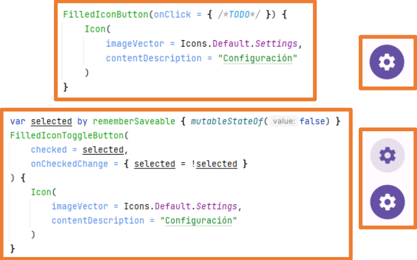
Componente ProgressIndicator
Los componentes LinearProgressIndicator y CircularProgressIndicator
permiten notificar al usuario que una acción está ocurriendo en segundo plano.
Estas barras de progreso pueden ser:
Indeterminadas: no tienen un punto final.
Determinadas: comienzan vacías y se rellenan hasta completarse.
Para que una barra de progreso sea determinada, debes asignar el parámetro progress
con un valor entre 0.0f y 1.0f.
Los componentes LinearProgressIndicator y CircularProgressIndicator
tienen múltiples constructores para distintos aspectos visuales.
Parámetros disponibles:
progress: porcentaje rellenado.
color: color del progreso.
trackColor: color del fondo del progreso.
strokeCap: forma del borde de la línea de progreso.
strokeWidth (solo circular): grosor de la línea de progreso.
CircularProgressIndicator LinearProgressIndicator
Componentes SearchBar
Existen dos componentes para crear barras de búsqueda:
SearchBar: el cuerpo ocupa toda la pantalla.
DockedSearchBar: el cuerpo ocupa parte de la pantalla (configurable).
El componente SearchBar tiene varios parámetros para su configuración, algunos de
ellos dependientes de un estado.
Por tanto, la configuración mínima sería la siguiente:
Puedes utilizar varios métodos:
Rellenar todo el cuerpo con todos los elementos y filtrarlos según la consulta del usuario.
Dejar el cuerpo vacío y cambiarlo según los resultados filtrados.
Crear un estado para el cuerpo y actualizarlo según el resultado de búsqueda.
…
Ejemplo de uso:
//Lista de elementos a buscar
val dragonBallCharacters = listOf(
"Son Goku",
"vegeta",
"Piccolo",
"Son Gohan",
"Trunks",
"Bulma",
"Krillin",
"Master Roshi",
"Freezer",
"Cell"
)
//En algunas acciones, necesitamos un context (normalmente la Activity)
val myContext = LocalContext.current
var querySearchstate by rememberSaveable {
mutableStateOf("")
}
var activeSearchState by rememberSaveable {
mutableStateOf(false)
}
SearchBar(
query = querySearchstate,
onQueryChange = {querySearchstate = it},
onSearch = {
Toast.makeText(myContext, "Buscando: $it", Toast.LENGTH_SHORT).show()
},
active = activeSearchState,
onActiveChange = {activeSearchState = it},
placeholder = { Text("Introduce el personaje a buscar")},
trailingIcon = { ExposedDropdownMenuDefaults.TrailingIcon(expanded = showMenu)}
) {
//Contenido filtrado
val charactersToShow = if (querySearchstate.isEmpty()){
dragonBallCharacters
}else{
dragonBallCharacters.filter {
it.contains(other = querySearchstate, ignoreCase = true)
}
}
Column{
charactersToShow.forEach {
Text(
text = it,
modifier = Modifier
.padding(8.dp)
.clickable {
Toast.makeText(myContext, "Seleccionado $it", Toast.LENGTH_SHORT).show()
querySearchstate = it
activeSearchState = false
}
)
}
}
}
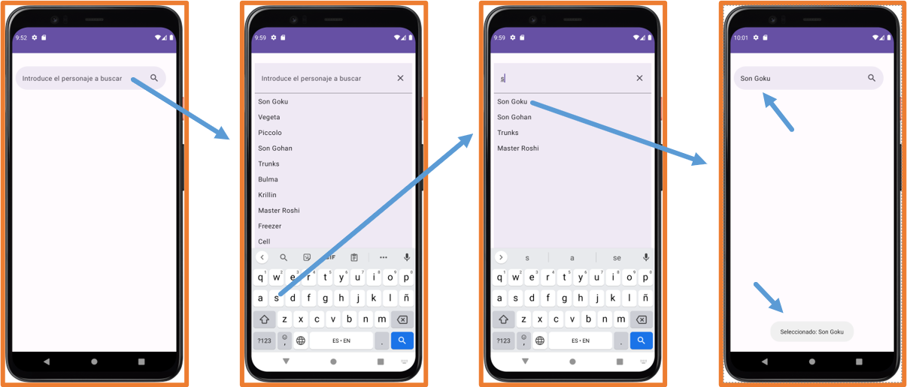
El componente SearchBar del ejemplo está obsoleto desde la versión 1.3.0 de
Material 3.
Desde la versión 1.3.0, el componente SearchBar incorpora un parámetro inputField y su uso es el recomendado.
En clase utilizamos Material3 v1.2.1 porque las versiones más nuevas contienen muchas características
experimentales.
Para este curso, utilizar SearchBar como en el ejemplo anterior es suficiente.
Componente AlertDialog
El componente AlertDialog permite mostrar un mensaje en una ventana modal (pop-up).
Los parámetros confirmButton, dismissButton,
icon, title y text
son funciones @Composable, por lo que puedes incluir cualquier componente dentro de
ellos.
También existe el componente Dialog, pero no utiliza principios Material y debe
configurarse por completo manualmente.
Ejemplo:
@Composable
fun ElementoComposable(){
val ctx = LocalContext.current
AlertDialog(
onDismissRequest = {
showToast(ctx, "Se ha cancelado")
},
confirmButton = {
TextButton(onClick = {
showToast(ctx, "Se ha aceptado")
}) {
Text(text = "Confirmar")
}
},
dismissButton = {
TextButton(onClick = {
showToast(ctx, "Se ha cancelado")
}) {
Text(text = "Cancelar")
}
},
icon = {
Icon(
imageVector = Icons.Default.Warning,
contentDescription = "Advertencia"
)
},
title = { Text(text = "Alert Dialog")},
text = { Text(text = "Cuerpo del diálogo")}
)
}
//Función para mostrar mensaje
fun showToast(ctx:Context, txt:String){
Toast.makeText(ctx,txt,Toast.LENGTH_SHORT).show()
}
Con el código anterior, el AlertDialog aparecerá siempre, lo cual no es muy útil.
Lo normal es mostrarlo u ocultarlo cuando se produzca una acción del usuario, como pulsar un botón.
Para controlar si se muestra u oculta, necesitas una variable almacenada en el estado,
de forma que cuando cambie, la pantalla se recomponga.
Crea una pantalla de registro que contenga los siguientes elementos:
Cabecera: contendrá el título de la pantalla de registro.
Título
Campo Email:
Validarás que sea un email
Un icono de sobre al final
Etiqueta con: user@domain.com
Campo nombre, primer apellido y segundo apellido:
Máximo 15 caracteres, solo letras (mayúsculas, minúsculas, con o sin acentos), espacios para nombres
compuestos
Etiqueta explicando qué debe introducir el usuario
Campo Teléfono:
Debe validarse como teléfono
El teclado solo permitirá números
Icono de teléfono al final
Etiqueta obligatoria
Fecha de nacimiento:
Será un DatePicker
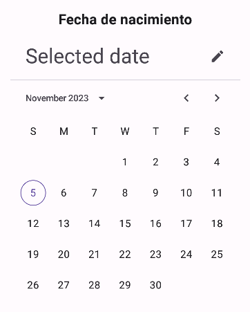
Campo Favoritos:
Dos listas de FilterChips
Al seleccionar, aparecerá un icono check
Botón limpiar formulario:
Deshabilitado mientras no haya datos
Al pulsar, reinicia el formulario
Botón registrar:
Se habilita cuando todos los campos tienen datos
Valida los datos:
Si todo es correcto, muestra un diálogo
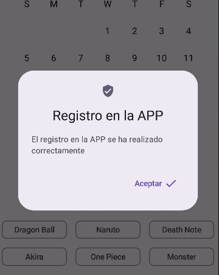
Si no, aparece un mensaje arriba
Parte inferior fija:
Permanecerá fija abajo; solo la parte del formulario hará scroll
Layout hace referencia al diseño gráfico o distribución de los elementos.
Es la forma en que colocas los elementos dentro de una interfaz.
Jetpack Compose proporciona una amplia variedad de componentes para diseñar el layout de cada pantalla de la
aplicación.
Ya hemos usado algunos componentes de layout como Surface, Column y Row.
Jetpack Compose ofrece muchos componentes de layout:
Surface
ConstraintLayout
Card
Scaffold
Box
TopAppBar
BoxWithConstraints
BottomBar
Column
NavigationDrawer
Row
NavigationRail
LazyRow y LazyColumn
Layout
LazyVerticalGrid y LazyHorizontalGrid
DropDownMenu
HorizontalPager y VerticalPager
BottomSheets y SideSheets
LazyVerticalStaggeredGrid y LazyHorizontalStaggeredGrid
...
Componente Surface
Surface es un contenedor con un estilo predefinido que sigue el tema por defecto
de Material Design.
El componente Surface es el eje central sobre el que se basa la filosofía de
Material Design.
De hecho, si revisas la documentación de Scaffold, verás que internamente utiliza
una Surface.
Puedes modificar su estilo por defecto, ya que Surface dispone de parámetros para la forma (shape), elevación
(elevation), borde (border) y colores para el contenido y el contenedor.
Se recomienda utilizar Surface como elemento padre de toda la interfaz.
El componente Surface por sí mismo no sirve para organizar elementos de la
interfaz.
Puedes usar Surface tantas veces como necesites, siempre que requieras una superficie diferenciada del resto de
la UI.
Surface por sí sola no organiza los elementos de la UI.
En la documentación aparecen todos sus parámetros.
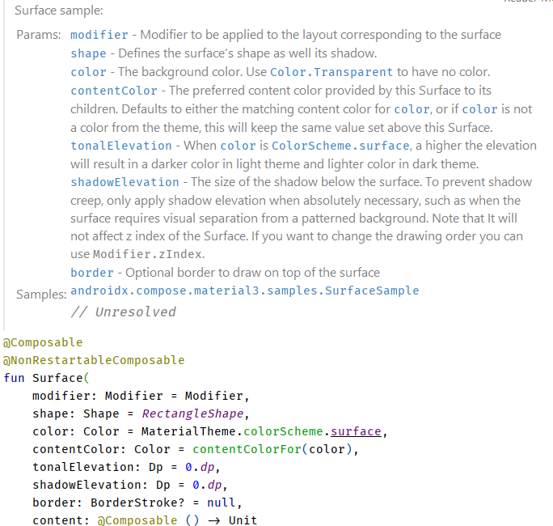
Dentro del contenido de Surface debes usar otro componente de layout como
Row o Column…
Componente Card
El componente Card es un Surface con un estilo
predefinido
(que puede modificarse mediante parámetros) para parecer una tarjeta, con bordes,
elevación y sombras.
Hay tres tipos: Card, ElevatedCard y
OutlinedCard.
Dentro de una Card, los elementos se organizan en una columna (ColumnScope).
Ejemplos de Card
Componente Box
El componente Box permite colocar varios elementos en el mismo lugar, uno encima de
otro.
Un posible caso de uso sería mostrar un contenido u otro cuando se pulsa un botón.
Componente BoxWithConstraints
El componente BoxWithConstraints es una versión especial de Box que proporciona las
dimensiones del propio componente a su contenido para que puedas usarlas si lo necesitas.
Componentes Column y Row
Los componentes Column y Row ya se han utilizado
anteriormente.
Para alinear contenido vertical u horizontalmente dentro de ellos, se usan:
Arrangement: eje principal (columnas → vertical, filas → horizontal).
SpaceEvenly: mismo espacio entre todos los elementos y también en los extremos.
SpaceBetween: mismo espacio entre elementos, pero sin espacio arriba ni abajo.
SpaceAround: mismo espacio por encima y por debajo de cada elemento (entre
elementos hay el doble).
spacedBy: permite indicar el espacio entre elementos en dp.
Top: alineado arriba → solo columnas.
Bottom: alineado abajo → solo columnas.
End: alineado al final según la dirección de lectura → solo filas.
Start: alineado al inicio según la dirección de lectura → solo filas.
Ejemplo de Arrangement
Si no especificas Arrangement, puedes usar weight()
para indicar el espacio proporcional.
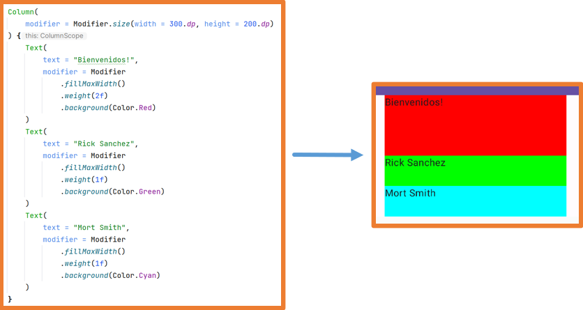
Alignment
Alignment controla el eje transversal:
Start: alineado al inicio de la línea → solo columnas.
End: alineado al final de la línea → solo columnas.
CenterHorizontally: centrado horizontalmente → solo columnas.
Top: arriba → solo filas.
Bottom: abajo → solo filas.
CenterVertically: centrado verticalmente → solo filas.
Componentes Flow
Los componentes FlowColumn y FlowRow son similares a
Column y Row, pero pasarán los elementos a una nueva
columna o fila
cuando ya no quepan en una sola.
Como se ha visto hasta ahora, cuando hay demasiados componentes en la pantalla, algunos pueden quedar fuera de
la vista del usuario
(más allá de la zona visible de la pantalla).
Cuando hablamos del parámetro modifier, mencionamos que si el contenido de un
componente no cabe en la pantalla, puedes usar los modificadores verticalScroll y
horizontalScroll para desplazarte y acceder a todo.
Sin embargo, este enfoque no es ideal porque carga todo el contenido del componente en
la RAM, independientemente de si es visible.
Los componentes Lazy descritos a continuación solucionan este problema.
Los componentes Lazy incluyen automáticamente un parámetro que, por defecto, crea
un estado rememberSaveable
para gestionar el scroll automáticamente.
Componentes Lazy
Los componentes Lazy te permiten mostrar elementos en una lista o en una
cuadrícula, tanto horizontal como verticalmente.
Los componentes Lazy ofrecen dos ventajas principales:
Si el contenido no cabe en la pantalla, puedes hacer scroll sin configuraciones adicionales.
Solo cargan los elementos visibles (más uno previo y otro siguiente), por lo que se usa la memoria de manera
más eficiente.
Los componentes Lazy disponibles son:
LazyColumn y LazyRow.
LazyVerticalGrid y LazyHorizontalGrid.
LazyVerticalStaggeredGrid y LazyHorizontalStaggeredGrid.
Todos los componentes Lazy tienen algunos parámetros comunes:
reverseLayout: booleano que indica si mostrar los elementos en orden inverso;
por defecto es false.
userScrollEnabled: booleano que indica si el scroll está habilitado; por
defecto es true.
Los componentes Lazy Grid tienen parámetros adicionales:
columns: para una cuadrícula vertical, establece el número de columnas.
rows: para una cuadrícula horizontal, establece el número de filas.
Para añadir contenido en elementos Lazy, puedes usar:
item: añade un único elemento al componente Lazy.
items: recorre una lista, añadiendo cada elemento al componente Lazy.
stickyHeader todavía está en modo experimental, así que debes añadir la
anotación en el componente.
@OptIn(ExperimentalFoundationApi::class)
El resultado se vería así:
Componentes LazyVerticalGrid y LazyHorizontalGrid
Usando LazyVerticalGrid y LazyHorizontalGrid, puedes
organizar elementos en columnas o filas, respectivamente.
Todos los elementos ocupan el mismo espacio, concretamente el
del elemento más grande.
Para definir el número de columnas en LazyVerticalGrid se usa columns.
Para definir el número de filas en LazyHorizontalGrid se usa rows.
Estas propiedades pueden ser:
Los componentes LazyVerticalStaggeredGrid y LazyHorizontalStaggeredGrid
son similares a los anteriores, pero cada elemento ocupa únicamente el espacio que necesita su contenido.
Parámetros principales de LazyVerticalStaggeredGrid:
columns: número de columnas
verticalSpacing: espacio vertical entre elementos
horizontalArrangment: espacio horizontal entre elementos
Parámetros principales de LazyHorizontalStaggeredGrid:
rows: número de filas
horizontalSpacing: espacio horizontal entre elementos
verticalArrangment: espacio vertical entre elementos
En el ejemplo, se crea un estado personalizado para gestionar el scroll de LazyVerticalStaggeredGrid y se asigna al componente.
También creamos un estado para mostrar u ocultar un botón. Este estado depende del anterior, por lo que usamos
derivedStateOf.
El estado del botón cambia cuando el primer elemento de la lista deja de ser completamente visible.
Finalmente, el botón utiliza una corrutina (que se explicará más adelante) para
desplazar el scroll hasta el primer elemento de la lista.
Componente ListItem
Aunque en una columna de cualquier tipo puedes añadir cualquier tipo de componente, Jetpack Compose ofrece el
componente
ListItem para proporcionar un estilo uniforme a los elementos de una lista.
Un ListItem tiene cinco zonas. Normalmente, en la zona
leadingContent se coloca un icono o imagen. En
trailingContent también es frecuente colocar un icono o texto.
Si hay contenido en la zona overLineContent, el contenido de
leadingContent y trailingContent
se alineará en la parte superior; si no hay overLineContent, se alinearán centrados
verticalmente.
Definición del componente:
Ejemplo:
¡ATENCIÓN! Ahora todas las propiedades que antes terminaban en "Content"
terminan en "Text".
Componente Scaffold
El componente Scaffold es una estructura por defecto que proporciona Jetpack
Compose
para crear interfaces complejas siguiendo los principios de Material.
Incorpora varios componentes comunes como:
topBar: barra de navegación superior.
bottomBar: barra de navegación inferior.
snackbarHost: permite mostrar mensajes que reemplazan a los antiguos Toasts.
floatingActionButton: un icono flotante generalmente ubicado en la parte
inferior de la
pantalla.
Definición de Scaffold
El único parámetro obligatorio es content, y al ser el último parámetro y una
lambda,
puede sacarse de los paréntesis.
Como se vio anteriormente, un proyecto de Android Studio utiliza el componente Scaffold por defecto.
Si decides usar Scaffold, debes elegir una de las siguientes opciones:
Hacer que el Scaffold sea el único hijo del
Surface principal en el proyecto, y añadir el resto de componentes
dentro del
Scaffold.
Reemplazar el Surface principal por un
Scaffold y añadir los demás componentes allí.
Estructura de Scaffold Ejemplo de Scaffold
Como puedes ver, los parámetros topBar, bottomBar,
snackbarHost y floatingActionButton son de tipo
@Composable, por lo que puedes incluir cualquier componente de Jetpack Compose
dentro de ellos.
Con esto, puedes personalizar Scaffold como quieras.
Jetpack Compose ofrece un conjunto de componentes específicos para esos
parámetros,
y es recomendable usarlos. También puedes configurar estos
parámetros para personalizar la interfaz. Estos componentes pueden usarse sin un
Scaffold.
Componente TopAppBar
El componente TopAppBar permite crear una barra superior con un título e iconos
para
realizar acciones.
El único parámetro obligatorio es title.
Existen tres versiones adicionales de topBar:
CenterAlignedTopAppBar: igual que TopAppBar pero con el título centrado.
MediumTopAppBar: el título se sitúa una línea más abajo.
LargeTopAppBar: similar a MediumTopAppBar pero con un título más grande.
Definición de TopAppBar
Aquí tienes un ejemplo de configuración:
Ejemplo de TopAppBar
El resultado sería algo así:
Componente DropDownMenu
Es común que un TopAppBar tenga un icono que abra un menú desplegable,
ya sea como navigationIcon o entre los iconos de acciones.
Creas este menú con los componentes DropdownMenu y
DropdownMenuItem.
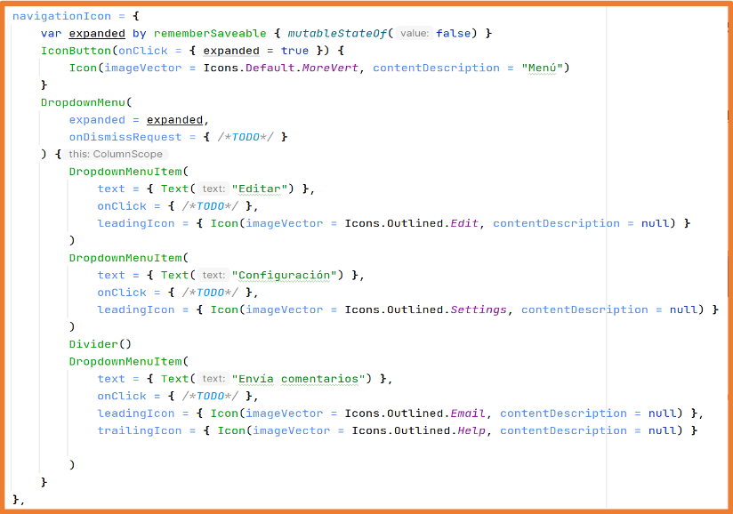
Podría tener un aspecto similar a este:
Componente FloatingActionButton
Los FloatingActionButton (FAB) son botones que representan la acción más importante
de
una pantalla. Tienen un estilo predefinido y normalmente flotan sobre otros elementos.
Se usan principalmente con el layout Scaffold, pero pueden utilizarse de forma independiente.
Hay cuatro versiones del componente:
FloatingActionButton: solo contiene un icono.
SmallFloatingActionButton: tiene un icono y es para pantallas pequeñas.
LargeFloatingActionButton: tiene un icono y es para pantallas grandes.
ExtendedFloatingActionButton: incluye icono y texto, usado cuando un FAB
necesita más información.
En un Scaffold, puedes añadir un FloatingActionButton
situado en la parte inferior del contenido.
Puedes especificar si aparece centrado o al final (según la dirección de lectura del idioma configurado).
Ejemplo de FloatingActionButton
Componente BottomBar
Una BottomBar es una barra situada en la parte inferior que contiene iconos
normalmente usados
para cambiar el contenido del Scaffold.
Hay tres opciones para crear una BottomBar:
BottomAppBar: con iconos y/o texto.
BottomAppBar: con iconos y FloatingActionButton.
NavigationBar: barra con tres, cuatro o cinco iconos.
En una NavigationBar, usas NavigationBarItem
para crear los elementos de navegación.
Si lo deseas, puedes usar NavigationBarItem dentro de una
BottomAppBar también.
BottomAppBar
Si usas BottomAppBar con iconos o
texto, estos se alinean a la izquierda. Si usas
NavigationBarItem, se centran en el espacio disponible.
BottomAppBar tiene un constructor con los parámetros actions
y floatingActionButton.
Si el Scaffold está configurado con el parámetro
floatingActionButton, no debes usar una BottomBar
con un floatingActionButton.
NavigationBar con elementos NavigationBarItem.
Componente SnackBar
Las Snackbars son mensajes temporales que aparecen en la parte inferior de la
pantalla.
Para crear una Snackbar, necesitas un estado:
val snackBarHostState = remember {SnackBarHostState()}
En el Scaffold, lo configuras en el parámetro snackbarHost, donde puedes
personalizar
el estilo de la Snackbar:
SnackBar por defecto SnackBar personalizada
Necesitas una corrutina para mostrar la Snackbar (esto se explicará más adelante).
val coroutineScope = rememberCoroutineScope()
En cualquier parte de la interfaz donde puedas ejecutar un bloque de instrucciones, la Snackbar puede lanzarse
con cualquier mensaje que desees.
Componente ConstraintLayout
Todos los layouts estudiados hasta ahora gestionan automáticamente la posición de los elementos.
El componente ConstraintLayout te permite organizar elementos en la pantalla
especificando explícitamente cómo están vinculados entre sí.
De este modo, esas restricciones permanecen intactas aunque cambie la orientación
de la pantalla o el dispositivo tenga un tamaño diferente.
Este layout es muy usado en vistas antiguas basadas en XML, por lo que es
importante conocerlo para posibles migraciones desde XML a Jetpack Compose.
También es importante conocerlo porque ofrece mucha libertad al crear interfaces de usuario en Android.
Para usar este componente, primero debes añadir una dependencia:
libs.versions.toml
Sección [versions].
Sección [libraries].
build.gradle.kts (Module: app)
Sección dependencies:
Recuerda hacer sync gradle y ya podrás usar ConstraintLayout.
Después de añadir la dependencia, puedes usar el componente ConstraintLayout
y añadir todos los componentes y sus restricciones dentro de él.
Para que los componentes puedan vincularse entre sí, cada uno debe tener alguna referencia que puedas utilizar.
Puedes crear referencias una a una o en grupo.
Una vez creadas las referencias, puedes asignarlas a los componentes del ConstraintLayout.
Para asignar una referencia a un componente, usas el modificador constrainAs.
Una vez asignadas las referencias, puedes indicar cómo se enlazan los elementos entre sí dentro del layout.
Los elementos pueden vincularse entre ellos o al contenedor, el propio ConstraintLayout.
La referencia del contenedor se llama parent.
Para crear estos enlaces, debes conocer los puntos a los que puedes vincularte.
Los puntos start y end dependen de la dirección de
lectura
establecida para el idioma del dispositivo.
Un ejemplo de escenario:
El resultado podría ser así:
Dentro de ConstraintLayout, puedes crear guías para que otros componentes se
anclen a ellas.
Las guías pueden usar porcentajes (float de 0 a 1) o valores en dp.
También puedes crear barreras con dos o más componentes que sirven como guía para
que otros componentes se anclen.
Ejemplo:
Los componentes Modal son aquellos que aparecen por encima de la pantalla. Existen
varios:
ModalNavigationDrawer
ModalBottomSheet
ModalSideSheet
...
El más conocido es ModalNavigationDrawer, también llamado
menú hamburguesa, el cual aparece como un menú lateral al tocarlo.
En dispositivos con pantallas grandes, este menú debe ser reemplazado por otro que permanezca visible de forma
permanente, como un NavigationDrawer o un NavigationRail.
A continuación se muestra un ejemplo de cómo usarlo, para que puedas entender cómo funciona. Ten en cuenta que
algunos conceptos (como corrutinas y navegación) se explicarán más adelante.
Los Tooltips son pequeños mensajes que aparecen cuando se mantiene pulsado un
elemento.
Cualquier componente puede tener un Tooltip.
Para usar estos componentes, es necesario actualizar ciertas versiones:
build.gradle.kts (Project):
Kotlin -> 1.8.21
build.gradle.kts (Module):
kotlinCompilerExtensionVersion -> 1.4.7
compose-bom -> 2023.05.01
core-ktx -> 1.10.1
Recuerda sincronizar el proyecto tras realizar cambios en los archivos gradle.
Para añadir un Tooltip a un componente, debes envolver dicho componente con
PlainTooltipBox o RichTooltipBox, y añadir el
modificador
tooltipAnchor al componente interno.
El componente RichTooltipBox permite mostrar más información e incluso algunas
acciones.
Necesita un estado para permanecer abierto, y una corrutina para cerrarse.
@OptIn(ExperimentalMaterial3Api::class)
@Composable
fun MComp() {
val tooltipState by remember {
mutableStateOf(RichTooltipState())
}
val scope = rememberCoroutineScope()
RichTooltipBox(
title = {Text(text = "Añadir a contactos" )},
action = {
TextButton(onClick = {
scope.launch { tooltipState.dismiss() }
}) {
Text(text = "Leer más")
}
},
text = { Text(text = "Añade amigos desde...")},
tooltipState = tooltipState
){
Button(onClick = { /*TODO*/ },
modifier = Modifier.tooltipAnchor()) {
Icon(
imageVector = Icons.Default.AddToPhotos,
contentDescription = "Añadir a contactos"
)
}
}
}
Teniendo el estado, puedes disparar el RichTooltipBox cuando quieras, por ejemplo,
al pulsar un botón para mostrar información la primera vez que se use.
scope.launch { tooltipState.show() }
P5 Práctica Master/Detail
En esta práctica crearás una aplicación Master/Detail. Para que sea más visible, forzaremos la aplicación a
estar en orientación horizontal.
Las aplicaciones Master-Detail suelen tener una lista de elementos en un lado y una vista detallada del
elemento seleccionado en el otro (la parte principal).
A continuación, un ejemplo de cómo se verá la aplicación.
Comentemos algunas partes de la aplicación:
El layout principal será un Scaffold o un Surface con un Scaffold dentro.
El Scaffold tendrá un TopAppBar que implementarás en un archivo separado. Se verá similar a esto:
TopAppBar
Inicialmente, cuando no se haya seleccionado ningún ítem de la lista, se mostrará un mensaje indicando que
debe seleccionarse un personaje. 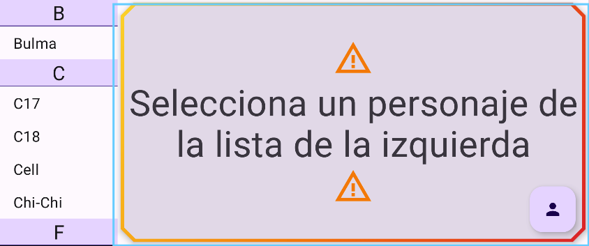
Además, el mensaje tendrá estas características:
La lista situada a la izquierda tendrá un StickyHeader con la inicial del grupo:
El elemento seleccionado se resaltará como se muestra en la imagen (los colores y el icono pueden
variar).
La lista está hecha en un archivo aparte, y el contenido será el campo “spanishName” de la lista de
personajes.
El detalle del elemento seleccionado:
Puede tener scroll.
Se mostrará similar a esta imagen:
Detail
El contenido tanto de la lista como del detalle provendrá del archivo Character, que debes colocar en el paquete “model”:
Estructura de archivos
Este archivo contiene una data class Character con la información de cada personaje, además de un Companion
Object
(similar a atributos y métodos estáticos en Java) que contiene la lista de todos los personajes y funciones
auxiliares.
FloatingActionButton: al pulsarlo se mostrará tu nombre y una foto tuya. Pulsar sobre el texto o en
cualquier parte de la pantalla hará que desaparezca.
FloatingActionButton
La información se verá algo similar a esta imagen. Observa la transparencia:
Información de usuario
Entrega la práctica aquí en un archivo ZIP
comprimido con todo el contenido de la carpeta.
Recuerda comentar tu código, estructurarlo adecuadamente y ejecutar build -> Clean Project antes de
entregarlo.